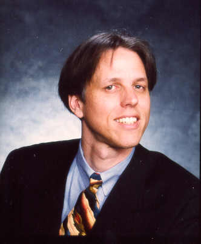

| DAN
GREENING PROFESSIONAL
RESUME |

Dan R. Greening, Ph.D.
by Vantage Point Photography
Like the Ermenguildo Zegna suit and Jerry Garcia tie? Don't expect
me to wear that suit every day. I'm allergic to wool!
Summary
Seasoned startup leader, inventive computer scientist, accomplished salesperson,
published author.
Experience
LikeMinds, Chief Technology Officer
April 1997 to present
In 1997, I co-founded a new company called LikeMinds, incorporating people, software, and
patents from Chaco and Songline Studios. LikeMinds builds market forecasting and
personalization software for web sites, direct marketing programs, and consumer product
assortment planning. LikeMinds technology is collaborative, meaning that we identify
similarities between people or stores to predict what marketing efforts will succeed in
the future.
At LikeMinds, I patented several algorithms related to marketing,
collaborative filtering, categorization, and clustering.
I lead the engineering team...
Chaco Communications, Inc., President Nov 94-present
Co-founded a company to produce multimedia network games and collaboration software. We
have been profitable since incorporation with zero initial capital, using contracting
revenue to bootstrap development of our products. I negotiate all contracts, obtain
business services, and develop business and marketing plans.
Chaco now gains all its revenues through OEM and direct licensing of its virtual
community products. Chaco's VR Scout VRML viewer has been rated best by many independent
sources, including San Francisco Chronical and C|NET.
Novell, Inc., Cupertino, CA
Director, Frameworks and Tools Mar 93-Oct 94
I managed C++ frameworks and GUI-builders teams. I had direct hiring and budget
authority. We were highly-leveraged through contracts with Visual Edge, GUILD,
WordPerfect, and KaseWorks, all involving joint development.
Novell and Borland built a portable C++ framework called ObjectWindows (OWL) for
AppWare Foundation. I was technical director, managing staff from Novell and Borland.
All projects required inter-company diplomacy: contract negotiations, motivating
mixed-loyalty personnel, obtaining and conserving resources. I frequently visited key
customers and gave conference presentations. The AppWare Foundation division was
originally a startup (Software Transformation, Inc). I helped sell STI to Novell.
I designed many C++ classes, including reference-counting and data-structures
templates. I do it for fun, though some have invaded our products. I use Borland 4.0 C++
and Microsoft Visual C++, Symantec C++ 7.0, GNU C++ and Lucid C++, on Windows, Mac, Unix.
I write code on airplanes, primarily; no other time available.
Although I would never do it as a primary job, I am an expert Unix system
administrator, having configured and used Solaris, SunOS, HP-UX, AIX, UnixWare, BSD386,
Linux, OSF/1.2 on 10base2, 10baseT, SLIP, PPP, and NetWare networks.
Project Leader, UNIX, Mar 91-Mar 93
Novell's AppWare Foundation is a graphical-user interface toolkit which runs on
X11/Motif, Microsoft Windows, and Macintosh. The group I led designed and wrote the
X11/Motif version of this toolkit. I implemented a system for loading a complete
widget-hierarchy from a resource database, among several other parts of the system. I
subclassed several Motif widgets.
I hired 4 senior engineers. When I left the group, I promoted one to replace me.
IBM T.J. Watson Research Center, Yorktown Heights, NY
Student Research Staff Member, May 89-Feb 91, May 88-Sep 88
Studied circuit placement and parallel simulated annealing (see publications).
Determined relationship between calculation inaccuracies and annealing convergence (a
longstanding open problem). Experimented with annealing on an IBM ACE/RT 8 processor
machine. Filed an invention disclosure for parallel VLSI placement technique. A program I
developed was merged into existing IBM production code: it provided a graphic interface,
and resulted in speedups of up to 3.4.
Software Transformation, Inc., Santa Monica, CA
Senior Software Engineer, Nov 88-May 89
Designed graphics library for X-windows, MS Windows, and Macintosh. (Company moved--see
``Novell'' above.)
UCLA Computer Science Department, Los Angeles, CA
Research/Teaching Assistant (part time), Jun 86-Nov 88
Developed a technique for dataflow program optimization, using Markov analysis (see
publications). Headed 5 person design team for a matrix-rotation arithmetic chip. Designed
and laid-out 24-bit signed-digit divider circuit. Headed 4 person system administration
team for 27 HP 9000 workstations. Taught Computer Science Theory: Turing
hierarchy, complexity theory, etc.
University of California Student Association, Sacramento, CA
President (elected), May 85-Jun 86
Full-time paid position. Managed 6 full-time lobbying staff members, 18 elected
directors, and a $200,000 budget. Made many public speeches. Represented 144,000 students
and 9 campuses. Wrote and won several bills in the California state legislature.
Maintained a high media profile, appointed representatives to university committees.
IBM Los Angeles Scientific Center, Los Angeles, CA
Student Technical Staff Member, Aug 84-Aug 85
Wrote parts of a IBM PC-LAN based distributed operating system: a process manager, a
storage manager, and network I/O drivers.
Contel/CADO Business Systems, Los Angeles, CA
Project Manager (Operating Systems), Dec 83-Jul 84
Managed 3 senior systems programmers. Designed new OS features, assigned and scheduled
software tasks. Evaluated hardware proposals. Designed and directed implementation of
multiprocessing, debugger, virtual memory and device drivers for Intel 80186 system.
Note: I received a Key Employee bonus for my work.
Designed and wrote multitasking OS used in a successful Intel 80186 based computer,
gross corporate revenue in first year of sale (1984): $12 million. Wrote object program
loader, storage manager, and high-speed sort program.
UM Computing Center / Computer Science Dept, Ann Arbor, MI.
Systems Research Programmer I, Feb 79 to Aug 82
Managed a 5 person team that designed and built an IBM 370 virtual machine. It
simulated the privileged instruction set, including I/O channels and virtual memory. Wrote
370 debugger, device drivers and multitasking supervisor. Extended IBM 370 Pascal
compiler. Designed optimized Pascal code-generation for IBM 370 (see publications).
Implemented a phonetic name database (see publications). Helped write an electronic mail
system, and improve operating system.
Teaching Assistant (part time) Sep 79 to Apr 81
Taught Operating Systems (graduate level course, while I was an undergrad) for
3 semesters and Data Structures for 1 semester. Material included virtual memory,
paging, concurrency, task scheduling, spooling, the IBM 370 architecture, etc.
UM Astrophysics Department, Ann Arbor, MI.
Image Processing Analyst (consultant), Mar 80 to Feb 81
Selected an image processing system and hired a chief programmer for the Astrophysics
Department.
Energy Consulting Associates, East Lansing, MI.
Seismic Programming Analyst (consultant) Jan 77 to May 77
Comshare, Incorporated, Ann Arbor, MI.
Systems Programmer, May 77 to Aug 78
Seismograph Service Corporation, Alma, MI.
Graphics Programmer (part time), Apr 75 to Aug 76
Education
Ph.D. in Computer Science, March 1995
University of California, Los Angeles
M.S. in Computer Science, March 1988
University of California, Los Angeles
B.S.E. in Computer Engineering (cum laude), August 1982
University of Michigan, Ann Arbor
Exhibitions
Exhibition floor staff, Software Development Conference, San Jose, March 1994.
AppWare Foundation lab staff, Brainshare, Salt Lake City, March 1994.
Software Transformation lab staff, Brainshare, Salt Lake City, March 1994.
Patent
D.R. Greening and J.B. Hey, System and Method for Computer-Based Marketing,
May 20, 1997, US Provisional Patent Application 60/047,220.
Theses
* indicates refereed publication.
D.R. Greening, Asynchronous Parallel Simulated Annealing, Ph.D. Dissertation,
UCLA, 1995.
* --, Modeling Granularity in Data Flow Programs, Masters Thesis, UCLA, 1988.
Journal Publications
--, ``Simulated Annealing with Inaccurate Cost Functions,'' submitted to Journal of
the ACM.
* --, ``Parallel Simulated Annealing Techniques,'' Physica D: Nonlinear Phenomena
42(1-3):293-306 (1990).
* --, ``Review of The Annealing Algorithm, by Otten and van Ginnekin,'' in ACM
Computing Reviews 31(6):296-298 (June 1990).
Book Chapter
* --, ``Asynchronous Parallel Simulated Annealing,'' in Lectures in Complex
Systems, Volume III, Addison-Wesley Publishing Company, Redwood City, California,
1991.
Conference Publications
* Douglas E. Donzelli and --, ``Software Components: A Scalable Solutions to Platform
Independent Software Development for Commercial Applications,'' in Proceedings of
Digest of Papers, COMPCON Spring 1992, San Francisco, CA, February 24--28, 1992, IEEE
Computer Society. * --, ``Equilibrium Conditions of Asynchronous Parallel Simulated
Annealing,'' in Proceedings, International Workshop on Layout Synthesis, paper
7.3 (May 1990), Research Triangle Park, North Carolina.
* -- and F. Darema, ``Rectangular Spatial Decomposition Methods for Parallel Simulated
Annealing,'' Proceedings of the International Conference on Supercomputing, pp.
295-302 (June 1989), ACM, Crete, Greece.
* -- and M.D. Ercegovac, ``Using Simulation and Markov Modeling to Select Data Flow
Threads,'' Proceedings of the 1989 International Phoenix Conference on Computers and
Communications, pp. 29-33, Phoenix, Arizona.
* -- and A.D. Wexelblat, ``Experiences with Cooperative Moderation of a USENET
Newsgroup,'' Proceedings of the 1989 ACM/IEEE Workshop on Applied Computing, pp.
170-176.
--, ``Type-Checking Loader Records,'' Proceedings, MTS Development Workshop VI
(June 1980), Rensselear Polytechnic Institute, Troy, New York, pp. 1271-1284.
--, ``Thoughts on *IT for Users,'' Proceedings, MTS Development Workshop VI,
pp. 1159-1163.
Peter Bird and --, ``A Quick and Dirty Description of MDSI Pascal,'' Proceedings,
MTS Development Workshop VI, pp. 1171-1173.
E.L. Foo, M. Smith, E.J. DaSilva, R.C. James, P. Reining, -- and C.G. Heden,
``Electronic Messaging Conferencing on {HIV/AIDS},'' Electronic Message Systems 88:
Conference Proceedings, pp. 295-305 (December 1988), Blenheim Online Ltd., Middlesex,
UK.
Invited Talks
--, ``ObjectWindows for AppWare Foundation,'' Borland International Conference,
Orlando, FL, June 1994.
--, ``Introduction to ObjectWindows for AppWare Foundation,'' 3 sessions, Novell
Brainshare conference, Provo, UT, March 1994.
-- and others, ``Cross-platform Development Panel,'' representing Novell's AppWare
Foundation, Motif and COSE 1993, Washington, DC, November 1993.
--, ``Parallel Asynchronous Simulated Annealing,'' University of California, Santa
Cruz, Computer and Information Sciences Colloquium (Nov 8, 1990).
--, ``Parallel Asynchronous Simulated Annealing,'' Stanford University, DASH Meeting
(Nov 26, 1990).
Posters
-- and F. Darema, ``Errors and Parallel Simulated Annealing,'' LANL Conference on
Emergent Computation (May 1989), Los Alamos, New Mexico.
Miscellaneous Service
Program Committee, 8th annual X Conference, January 1994. Session Chair, Simulated
Annealing Session, 13th IMACS Congress on Computation and Applied Mathematics,
Dublin, Ireland, July 22-26, 1991.
Reviewer
International Conference on Parallel Processing, 1988 and 1990.
IEEE Computer, 1989, 1990.
LANL Emergent Computation Conference, 1989.
OSRA Journal of Computing, 1990.
Languages
Fluent: C, C++, Pascal, LISP, PL/I, FORTRAN 77, TeX, LaTeX, T, Modula-2,
BASIC, SNOBOL, ALGOL60, ALGOL68, PLUS, and many assemblers.
Have used: FP, Sisal, ADA, APL, FORTH, RATFOR, TICOL.
Reading knowledge: CLU, VAL, BLISS, ICON, Simula.
Hardware
IBM RS-6000, RT, PS/2, PC, 1620, 370/3090 mainframes and clones, HP 9000/350 (Motorola
68020), VAX 780, Intel 386, 286, 186, 8086, and 8085, Pyramid 90x, National 16032, Apollo,
Zilog Z-80, Hewlett-Packard 3000, Raytheon RDS-500, Xerox Sigma 9, TI 742, Apple-II and
Macintosh, TI Explorer.
Systems
UNIX (AIX 3.1, BSD 4.x, ATT System V, HP-UX, Xenix), X Windows (10.4 and 11.3),
Microsoft Windows, Apple Quickdraw, LOCUS, IBM PC-DOS with PC/NET, Apollo Domain, WYLBUR,
IBM VM/CMS, IBM OS, Intel ISIS-II, MTS (U. of Michigan), Commander II (Comshare), MMIOS
(Contel), Raytheon RDOS.
Notes
Space limitations prevent me from describing many experiences in detail: I spent two
months at the MIT Lab for Computer Science, modeling the performance of a butterfly
switching circuit for a large dataflow computer (using Markov techniques). I attended the
Santa Fe Institute's Complex Systems Summer School in 1990 (complex systems: fractals,
chaos, spin-glasses, Navier-Stokes fluid flow equations, neural networks, genetic
algorithms, natural selection, mathematical epidemiology, etc.) I have ported many
public-domain software packages to a wide-variety of machines, including several
incarnations of X-windows, TeX, NNTP, Magic, etc. I have configured Domain name-servers,
YP (Yellow Pages) servers, and NFS (Network File System) for several variants of UNIX. I
have written large graphics-oriented programs for the X11 windows platform. If curious,
ask.
Member
ACM, IEEE Computer Society, AAAS, Mensa.
Service
National Institutes of Health; 9/88-3/91; Volunteer
anneal electronic mailing list ; 1/89-present ; Moderator
sci.med.aids electronic newsletter; 7/86-present ; Moderator
ACM Scientific Freedom and Human Rights Committee ; 12/90-1/92; Member
Cave Research Foundation;6/90-present;Joint Venturer
UCLA Student Conduct Committee ; 9/86-8/88 ; Member
Stonewall Democratic Club ; 1/86-12/86 ; Member, board of directors
ICC Housing, North Division (216 residents);9/78-8/79; Chairperson
Bag-End Housing Coop (24 residents);9/77-9/78;President
Interests
Backpacking, wild cave exploration, running.
Publications
I have written extensively as LikeMinds Chief Technology Officer and
Chaco Chief Executive Officer, however, unfortunately I don't have the freedom to openly
publish most project proposals, white papers and patent applications. Here's a
sample which might suggest my interests.
- Dan R. Greening, Building Consumer
Trust with Accurate Product Recommendations, LikeMinds white paper, 1997.
- Dan R. Greening and John Hey, System and Method for Computer-Based Marketing, US Patent
applied for.
- Dan R. Greening, Simulated Annealing with Errors,
PhD Dissertation, Computer Science Department, University of California, Los Angeles,
1995.
- Dan R. Greening, ``Parallel Simulated Annealing Techniques,'' in Emergent
Computation, MIT Press, Cambridge, Massachusetts, 1991, ISBN 0-262-56057-7, pp.
293-306.
- Dan R. Greening, ``Asynchronous Parallel Simulated Annealing,'' in 1990 Lectures in
Complex Systems, Addison-Wesley, Redwood City, California, 1991, ISBN 0-201-52575-5,
pp. 497-508.
- Dan R. Greening, ``Review of The Annealing
Algorithm, by Otten and van Ginnekin,'' in ACM Computing Reviews
31(6):296-298 (June 1990).
- Dan R. Greening, Modeling Granularity in Data Flow
Programs, Masters Thesis, Computer Science, University of California, Los Angeles,
1988.
- Dan R. Greening and Alan Wexelblat,
``Experiences with Cooperative Moderation of a USENET
Newsgroup,'' Proceedings of the 1989 ACM/IEEE Workshop on Applied Computing,
pp. 170-176.
Present occupations
|